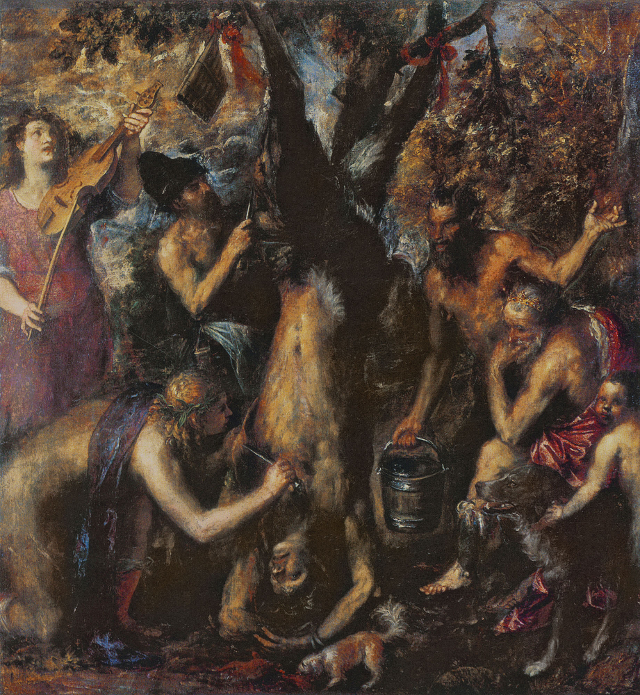

Scorticamento di Marsia1576 - Museo Nazionale, Kroměříž Il dipinto fa parte della serie di opere a sfondo mitologico, concepite dal pittore nell'ultimo periodo della sua vita. Ritenuta unanimemente tra i capolavori dell'autore, rappresenta sulla tela il mito del supplizio di Marsia, il sileno che osò sfidare Apollo. Si tratta di un'opera cruda e impattante, nella quale il dolore di Marsia, scorticato vivo, viene trasposto direttamente nello stile scelto per rappresentare la scena: il pennello stesso strappa e scortica ogni superficie rappresentata, che sia pelle umana, erba o facciate di edifici. L'iconografia rappresentata è dissonante, alla scena di dolore e strazio vengono aggiunti strumenti musicali e numerosi personaggi assistono alla punizione senza avvedersi realmente che essi stessi sono scuoiati dalla mano dell'artista. Mida, il personaggio posto sulla destra del dipinto con fare pensieroso, è probabilmente un autoritratto di Tiziano, il che si può intuire dal raffronto con il più celebre autoritratto custodito al Prado, il pittore appare così giudice dell'opera nell'opera stessa, paragonando il potere dell'artista a quello di Apollo. La scelta di Tiziano di dipingere un tale episodio della mitologia greca è forse ispirata dalla violenta morte di Marcantonio Bragadin, militare della Repubblica di Venezia. |
| Barbiero Leonardo
Designer & Biografia leonardo.barbiero@gmail.com |
Bottin Marco
Contenuti & Revisione bottin.marco@gmail.com |
Accessibilità
 Validato CSS3
Validato CSS3
|